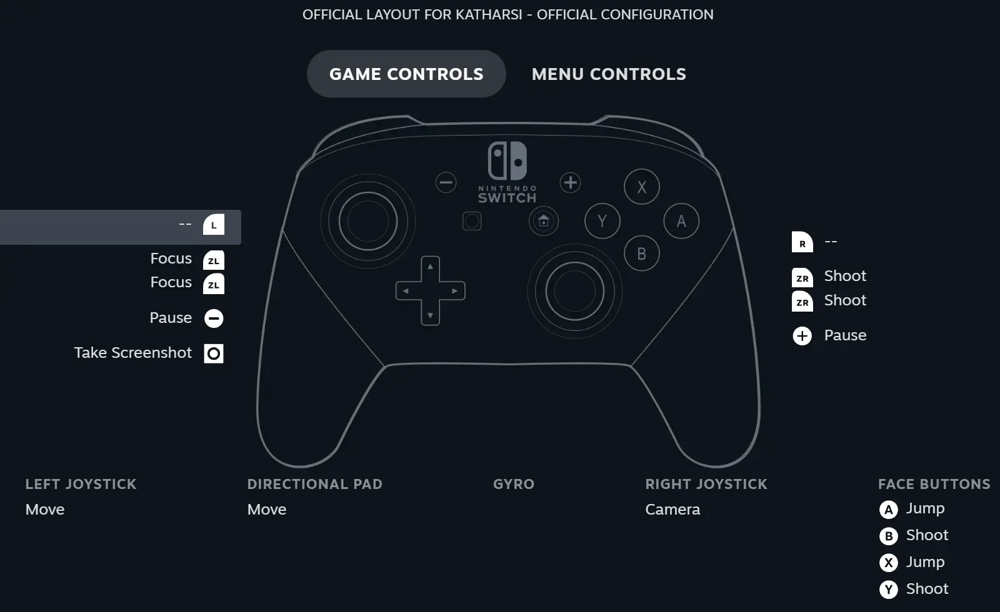

Project Overview
Katharsi is an atmospheric 3D puzzle‑adventure set in a corrupted Byzantine cathedral. Guide your light‑wielding companion to cleanse ruins, solve environmental puzzles, and uncover a haunting tale of loss and redemption. Currently, in active development by a 15‑student capstone team at BUAS, with a playable Steam demo now available.
Automated Jenkins CI/CD for automated building and testing
We use Jenkins as our CI/CD backbone—automatically building and pushing to our Steam ‘jenkins’ branch regularly. A daily test suite (unit, integration, and smoke tests) runs to catch regressions before upload, sending detailed failure reports and archiving logs so we can track stability trends over time.
Fully compatible with the Steam Input API
Katharsi ships with full Steam Input support—automatically detecting controllers (gamepads, Steam Deck, keyboard/mouse), providing context‑aware action sets for puzzles, and letting players remap bindings in‑game or via the Steam overlay. Learn more about our custom Steam Input Plugin →

Team & Status
- Team: 15‑member capstone team at BUAS (3 programmers, 6 artists, 5 designers, 1 producer, etc.)
- Role: Build‑pipeline & tools development—CI/CD, Steam Input integration, automated testing
- Development: Actively under way (3 months in) with weekly sprints and stand‑ups
- Demo: Playable Steam demo now live—Try it on Steam →